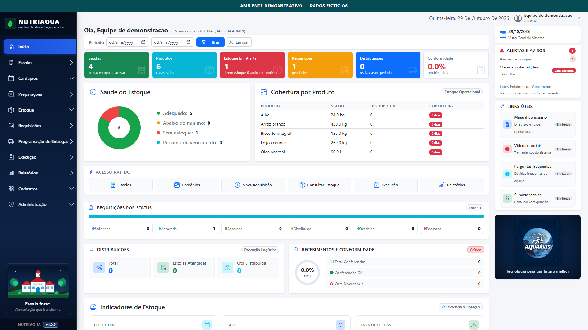
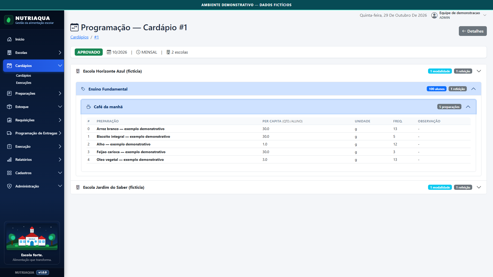
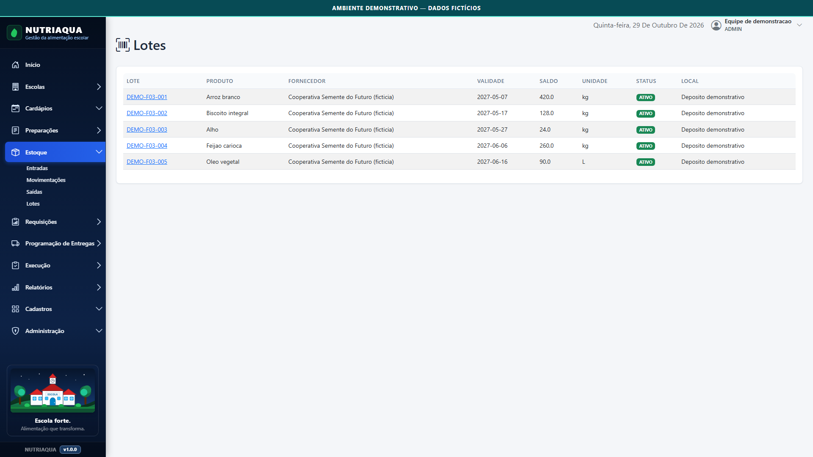

01 / CONTROLE
Visibilidade para o que importa.
Indicadores, alertas e uma visão geral da operação.
Conheça o NUTRIAQUA — Sistema de Gestão da Alimentação Escolar: uma experiência web desenvolvida para organizar informações, estoques, planejamento e distribuição da alimentação escolar.

A gestão da alimentação escolar passa por diferentes etapas: cadastro, planejamento, estoque e preparação das entregas. O NUTRIAQUA explora como uma interface única pode trazer mais organização a esses processos.
Um projeto independente, documentado e apresentado de forma demonstrativa. Não representa contratação ou adoção oficial por órgão público.
Fluxos relacionados, com uma linguagem visual consistente e informações organizadas para diferentes tarefas.
Indicadores, alertas e uma visão geral da operação.
Cardápios e programação organizados por etapas.

Uma leitura mais clara do estoque e suas informações.

Seis capturas autênticas do software executado localmente, com informações fictícias. Nenhuma tela de produção foi utilizada.
Selecione uma captura. Use também as setas esquerda e direita, Home e End nos botões.
Capturas do ambiente local validado para seis fluxos específicos. Foram reportados 197 testes direcionados aprovados; a regressão completa do sistema permanece pendente. Os dados exibidos são exclusivamente demonstrativos.
O NUTRIAQUA usa uma arquitetura web modular. Esta é uma visão conceitual e pública, sem detalhes de infraestrutura, credenciais ou regras operacionais privadas.
Ler arquitetura públicaEsta vitrine apresenta um projeto independente de software e o processo de transformá-lo em uma experiência visual clara. Próxima etapa: uma demonstração audiovisual baseada nas telas aprovadas.